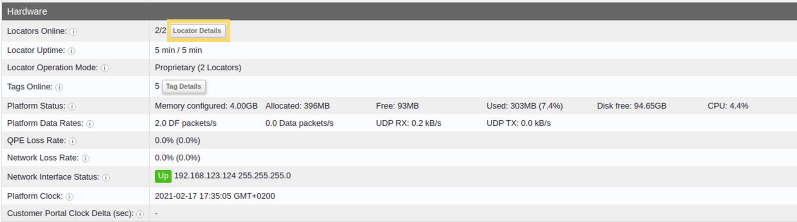
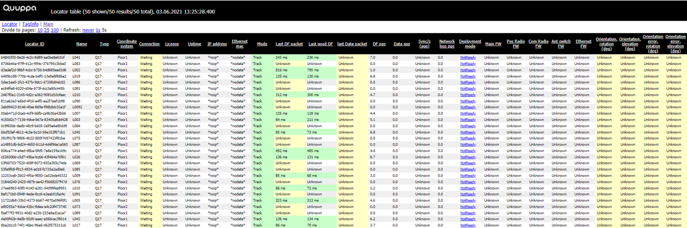

Locator Details Table
Locators are key components of the Quuppa system, receiving radio signals from the tags and forwarding them to the Quuppa Positioning Engine (QPE) for processing into positioning estimates. Due to their crucial role in the operation of the system, it is important to have a more detailed view into the performance and state of each individual Locator. This is what the Locator Details table is for.
The Locator Details table is the place to go for monitoring the status of the Locators. It provides a wide range of information for each individual Locator in your system, including indicators that help in assessing which Locators might be malfunctioning (e.g. unexpectedly offline) or struggling with air interface load issues (e.g. losing too many packets to provide optimal positioning performance) or running old firmware versions that need to be updated to improve performance.
This section will show you how to access and use the Locator Details table.
Using the Locator Details Table
To get to the Locator Details table:
- Open the QPE Web Console's main view (e.g. at http://localhost:8080/qpe/).
- In the Hardware section, find the Locators
Online row and click on the Locator Details
table link.

- The Locator Details table will open. Use the available information to
check if all of the Locators are working as they should and whether any
adjustments to the project settings are needed to optimise performance. For more
information about each column, please see the Locator Details Table
Definitions section.

Tip:You can change what data is shown and how it is displayed in the table by using the following tips:- To filter the data into ascending or descending order, click on the column header. The column header will be marked with either (asc) or (dec) to indicate whether the data is now in ascending or descending order.
- To edit how many entries are shown per page, use the Divide to pages options in the top left corner of the page.
- To change the poll interval for the data, i.e. how often the data is updated, use the Refresh options available in the top left corner of the page.
- To navigate back to the main page, you can either click on the Quuppa logo at the top of the page, or use the Main link in the top left corner of the page.